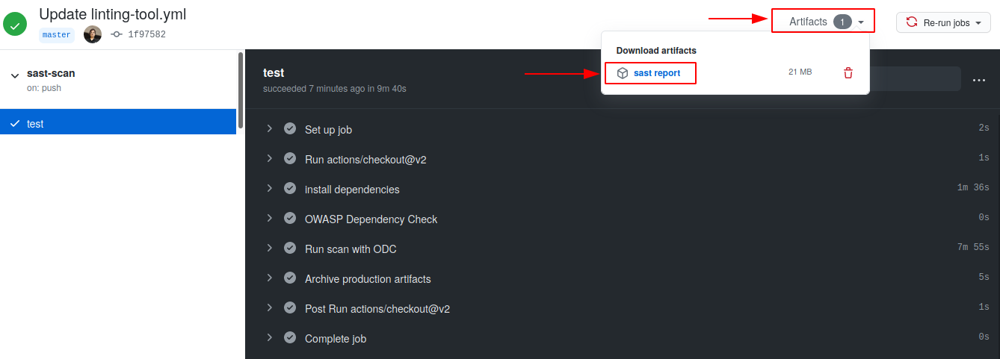
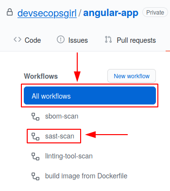
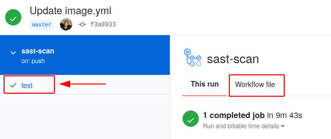
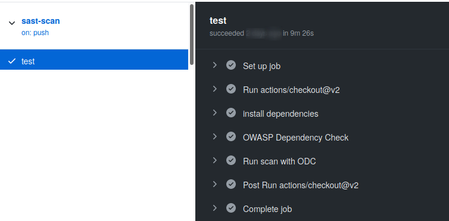

SAST through Github Action
Objective
This section aims to perform SAST for angular-realworld-example-app and generate a report to provide a solution to the first point of the problem statement under Task 1.
SAST
Static analysis or Static application security testing (SAST), is a testing methodology that analyzes source code to find security vulnerabilities that make organization’s applications susceptible to attack. SAST scans an application before the code is compiled. It’s also known as white box testing. SAST takes place very early in the software development life cycle (SDLC) as it does not require a working application and can take place without code being executed. It helps in identifying vulnerabilities in the initial stages of development and quickly resolve issues without breaking builds or passing on vulnerabilities to the final release of the application.
Github Action
GitHub Actions make it easy to automate all software workflows. Github Actions let us build, test, and deploy our code right from GitHub. We can also assign code reviews, manage branches, and triage issues the way we want with actions. GitHub Actions are designed to help in building robust and dynamic automation's.
Whether we want to build a container, deploy a web service, or automate welcoming a new user to our open-source project — there’s an automated action for that.
Creating Workflow
I followed this official link for creating the first workflow.
-
On GitHub, I forked
angular-realworld-example-appand I created a new file in the.github/workflows -
I wrote the YAML contents into the
sast-scan.ymlfile. For knowing the syntax of Github action I followed this official link -
I also stored the report as
sast reportin artifacts from where it can be downloaded

- The YAML file for SAST scan is as follows:
name: "sast-scan"
on:
push:
branches: [master]
jobs:
test:
runs-on: ubuntu-latest
steps:
- uses: actions/checkout@v2
- name: install dependencies
run: |
sudo apt install npm
sudo npm install --package-lock
npm audit fix
first
- name: OWASP Dependency Check
run: |
wget https://github.com/jeremylong/DependencyCheck/releases/download/v6.0.2/dependency-check-6.0.2-release.zip
unzip dependency-check-6.0.2-release.zip
- name: Run scan with ODC
run: |
dependency-check/bin/dependency-check.sh --project "angular-realworld-example-app" --scan . > ODC-report
- name: Archive production artifacts
uses: actions/upload-artifact@v2
with:
name: sast report
path: |
./ODC-report
- To run workflow, I scrolled to the bottom of the page and select Commit directly to the
mainbranch. Then, to create a pull request, clickPropose new file. Committing the workflow file in repository triggers the push event and runs workflow. - The report that got generated is here
Viewing workflow results
- On GitHub, I navigated to the main page of the repository.
- Under repository name, click
Actions.
- In the left sidebar, select the
workflowto see underAll Workflowssection. From the list of workflow runs, I selected the namesast-scanof the run to see.  -
In the left sidebar, I selected
testand I can also check thesast-scan.ymlby selectingWorkflow file.  -
Expand the
testto view the results and each step expanded further to see the logs.
